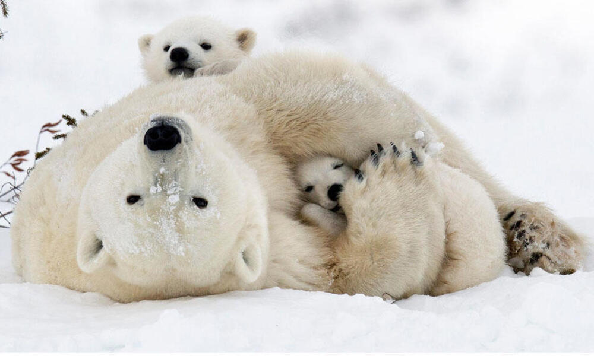

El Oso polar es un gran mamífero que vive en las regiones frías
del Ártico. Su hábitat principal son las zonas de hielo marino, donde puede desplazarse y cazar. Es un animal carnívoro que se alimenta
principalmente de focas, a las que captura cerca de los agujeros en el hielo donde salen a respirar. Los osos polares están muy bien adaptados
al frío extremo gracias a su gruesa capa de grasa y su denso pelaje blanco, que también les sirve de camuflaje en la nieve. Son excelentes
nadadores y pueden recorrer largas distancias en busca de alimento o nuevos lugares con hielo. Aunque suelen ser animales solitarios,
las madres cuidan de sus crías durante varios meses hasta que pueden sobrevivir por sí mismas.
Algunas características de los elefantes son:
- Es uno de los carnívoros terrestres más grandes del mundo.
- Tiene pelaje blanco que le ayuda a camuflarse en la nieve.
- Posee una gruesa capa de grasa que lo protege del frío.
- Es un excelente nadador.
- Vive principalmente en el Ártico y zonas con hielo marino.